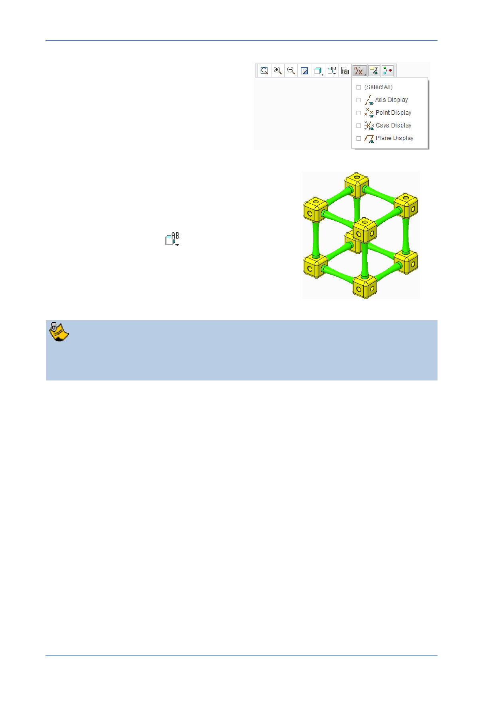

PTC Academic Program
4. If necessary, disable the display of all
datum features.
5. Reorient the assembly using the mouse or by
selecting a saved view:
Press CTRL + D to reorient the model
or
Click Named Views
from the Graphics
toolbar and from the list select TRIMETRIC .
The model should look as shown on the right.
If you ISOMETRIC and TRIMETRIC are missing from your named view list, your
installation of Creo Parametric has not been configured using the standrard PTC
Education templates .You can still zoom and spin your model into any orientation
you want.
Next, you will apply one of the default scenes and corresponding room to your model.
You will then snap the floor of the room to the bottom of the assembly.
6. Opening the Render tab:
In the Quick Access toolbar, click the Render tab.
© 2012 PTC
Creo Parametric 2.0 Primer
Page 82